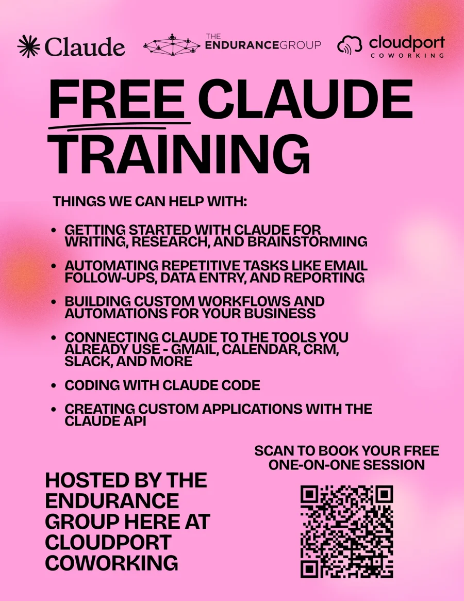

TEG is an official member of the Anthropic Claude Partner Network. We build Claude Skills, Projects, and MCP integrations for teams seeking measurable value. See our full Claude services.
The Endurance Group works out of Cloudport Coworking in Portland, Maine. Over the past few months I've been doing something simple with the people who share the building with us: offering free one-on-one Claude training to any Cloudport member who wants it.

Why we started offering it
Most of the people I talk to about Claude aren't stuck on the technology. They're stuck on where to begin. They've tried it a few times, gotten a decent answer or a mediocre one, and never found the next step that turns it into something they use every day.
A coworking space is the perfect place to fix that. Members run small companies, nonprofits, and teams inside larger organizations, and everyone has a pile of repetitive work: email follow-ups, data entry, reporting, research. So we put a flyer up, added a QR code, and made the offer plain. Scan it, book a free one-on-one session, and we'll work on your actual workflow.
The sessions cover whatever is most useful to the person in front of me. That can mean getting started with Claude for writing, research, and brainstorming. It can mean automating repetitive tasks, connecting Claude to tools like Gmail, Calendar, your CRM, and Slack, or building custom workflows. For more technical members, it can go as far as coding with Claude Code and building custom applications on the Claude API.
A session with Scott at MTI

One of the first people to book was Scott Bursey, an Investment Officer at the Maine Technology Institute.
If you don't know MTI, it's one of the more important organizations in Maine's innovation economy. It's an industry-led, publicly funded nonprofit that the Maine Legislature founded in 1999 to help technology-intensive companies grow and create quality jobs across the state. MTI provides grants, loans, and equity investments, and it has supported more than 4,000 projects in Maine. The investment officers there spend their days reviewing companies, evaluating proposals, and writing up what they find, which is exactly the kind of work where a good AI workflow pays off.
I built Scott's session around how he actually works rather than a generic walkthrough. I also spent real time on what AI is good at and where it falls short, because people who understand the limits get better results and catch mistakes before they matter.
What I taught
Across these sessions, I walk people through four features of Claude that do most of the heavy lifting for everyday work. Each one links to Anthropic's own help article if you want to try it yourself.
- Projects: organize chats, files, and instructions around a workflow so Claude starts every conversation with the right context.
- Skills: teach Claude repeatable, specialized tasks so you get consistent results without re-explaining yourself.
- Connectors: link Claude to your other tools and data, like email, calendar, and your CRM.
- Scheduled tasks: have Claude run recurring work automatically instead of waiting for you to ask.
Here is how Scott described the training afterward:
"I recently had the privilege of receiving a customized training on Claude from TEG, and it was amazing! The Claude training has made me more effective and efficient at work and has already saved me untold hours. TEG also shared the strengths and weaknesses of AI, so I have a better understanding of how to produce a quality product. Looking forward to the next training session!"
Scott Bursey, Investment Officer, Maine Technology Institute
From one session to three
The part I'm happiest about is what came next. After Scott's session, we went on to meet with two more people from his office. That's how these things tend to go. Once one person sees their own work get easier, colleagues start asking what changed, and the conversation moves from "what is this?" to "what should our team do with it?"
That's the real reason I keep offering free sessions. A single hour with one person is a low-risk way for both of us to find out whether Claude can help. Sometimes the answer is a few new habits. Sometimes it turns into a team conversation, a custom skill, or an integration with the systems a team already uses.
If you work at Cloudport, or anywhere else
If you're a Cloudport member, grab a flyer or find me in the space and we'll set up a time. If you're not, the offer isn't limited to our building. We run free team trainings for organizations too, and you can book one below.
Frequently asked questions
Is the Claude training really free?
Yes. I offer free one-on-one Claude training sessions to members of Cloudport Coworking in Portland, Maine. You book a session, tell me what you do and where your time goes, and we work through Claude together based on your actual workflow.
What does a free Claude training session cover?
Each session is built around the person in the room. Common topics include getting started with Claude for writing, research, and brainstorming, automating repetitive tasks like email follow-ups, data entry, and reporting, connecting Claude to tools like Gmail, Calendar, CRM, and Slack, building custom workflows, coding with Claude Code, and creating custom applications with the Claude API.
Can my team get a Claude training session too?
Yes. Several sessions have started with one person and grown into a conversation with their colleagues. You can book a free session and mention who else should be involved, or see the details on our Free Training page.
Related reading
Why I believe anyone can learn AI (even a former English teacher)
Why AI isn't just for technical people, and what that means for business owners on the fence.
What to automate first when you're a small B2B team
How to pick the first workflow worth handing to AI.